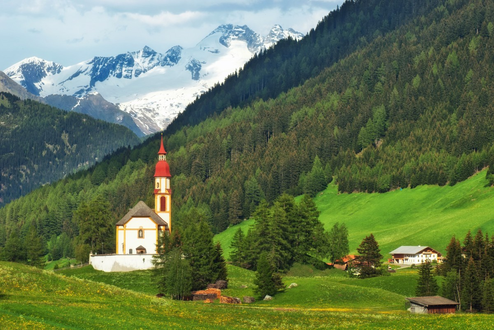

Day 1
Day 2
Day 3
Day 4
Day 5
Day 6
Day 7
Day 8
Day 9
Day 10
Day 11
Day 12
Day 13
Home
Itinerary
Wildflowers
Vocabulary

Itinerary
Day 1 - Drive to JFK Airport, New York, NY
Day 2 - Fly to Munich via Paris
Day 3 - Travel to Innsbruck by train
Day 4 - Pfeishütte
Day 5 - Hike back down to Innsbruck
Day 6 - Travel by train to Mayrhofen in the Zillertal
Day 7 - Kesseler Hütte
Day 8 - Gfallenspitze and back to Mayrhofen
Day 9 - Travel by train to Venice
Day 10 - Explore Venice
Day 11 - Explore Venice
Day 12 - Travel by train to Munich
Day 13 - Fly to JFK and drive home
e-mail me if you have questions or comments about this site
Jump to Top